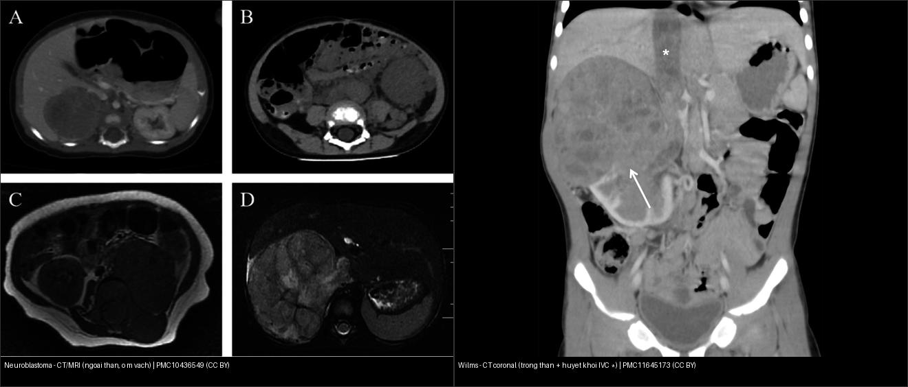
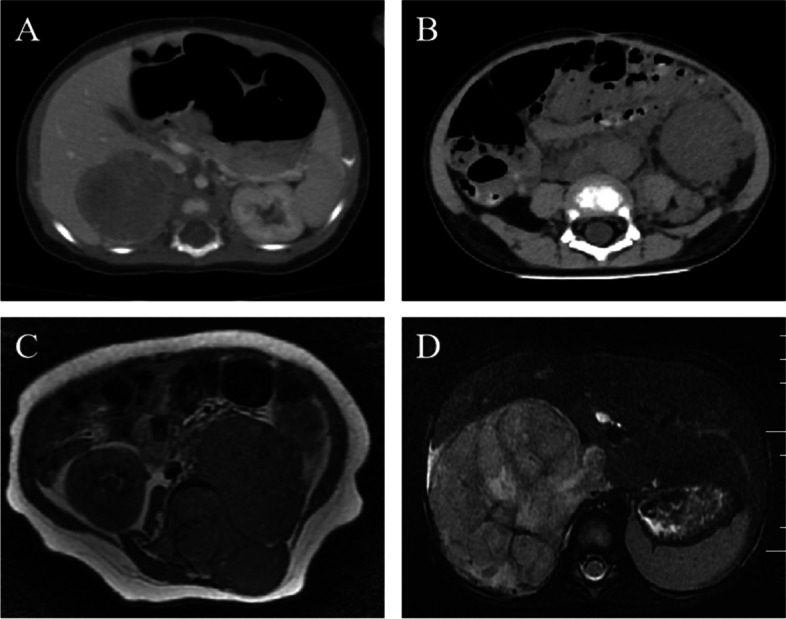
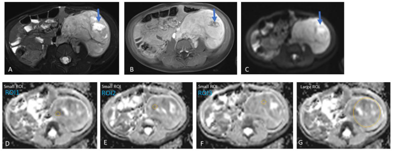
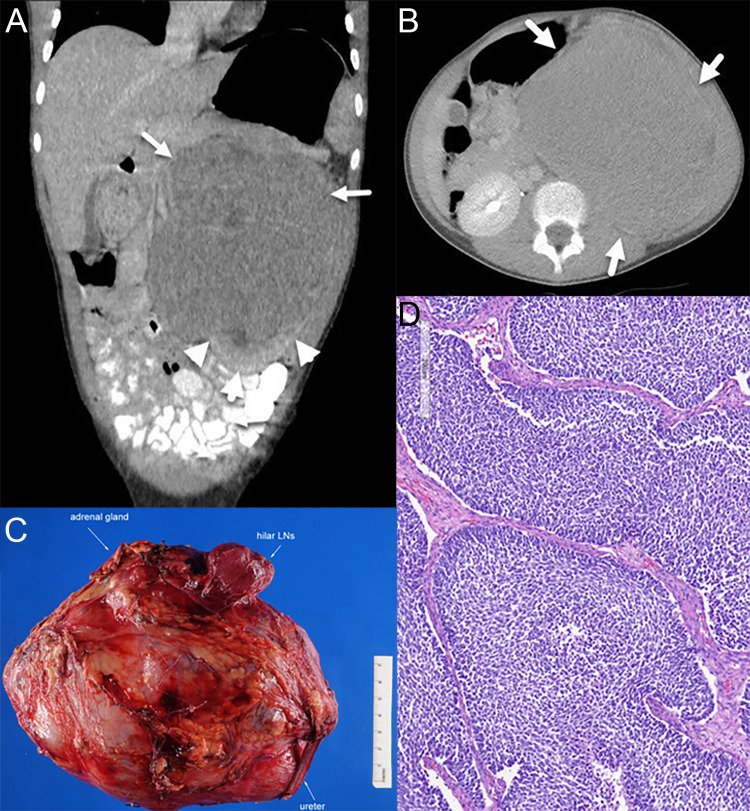
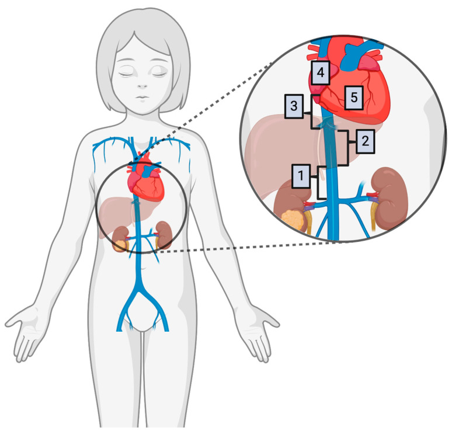
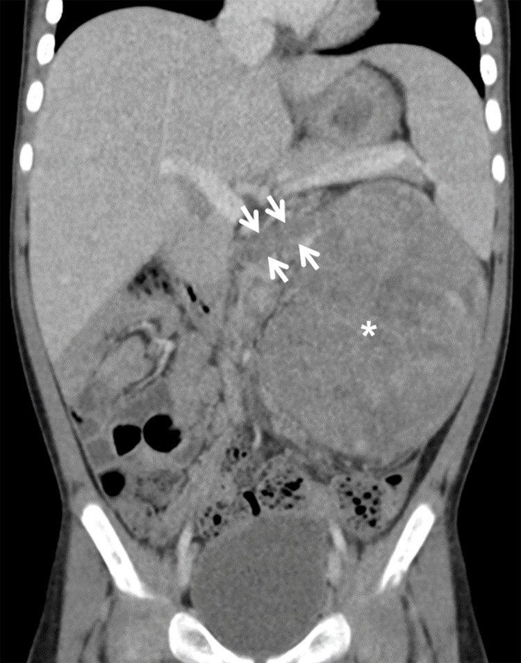
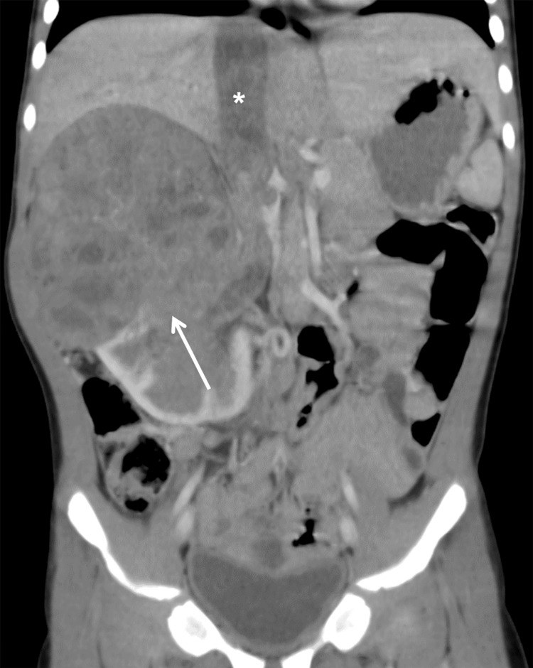
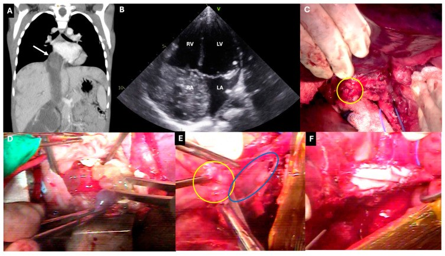

630 — U bụng nhi: neuroblastoma vs Wilms / Peds abdominal mass
Tags: pattern:khoi-bung-nhi vung:sau-phuc-mac-nhi
Mức chắc chắn (certainty): tổng hợp y văn (literature synthesis) — tổng hợp review + ca nguyên văn từ y văn mở; các ca minh họa ghi PMCID + Fig trong images/CREDITS.md.
1. Tổng quan — ngoài thận ôm mạch vs trong thận đẩy mạch
- Neuroblastoma (u nguyên bào thần kinh, < 2 tuổi, từ chuỗi giao cảm/nội tiết/thượng thận): u bao bọc (encasement) mạch lớn — ĐẨY/ÔM mà KHÔNG xâm nhập lòng mạch. TẠI SAO vượt đường giữa + vôi 85–90%: u lan theo chuỗi giao cảm hai bên cột sống nên hay vượt đường giữa, và vì u phát triển nhanh, hoại tử trung tâm lắng đọng canxi → vôi hóa thô/đám trên CT.
- Wilms (u nguyên bào thận, 3–4 tuổi, từ nhu mô thận): u đẩy mạch dẹt ra + dấu móng vuốt (claw sign) — thận lành bị ôm quanh u — và lan theo tĩnh mạch (thrombus TM thận → TM chủ dưới [IVC] → nhĩ phải). TẠI SAO không vượt giữa mà vào tĩnh mạch: u sinh từ thận nên đường lan là tĩnh mạch dẫn lưu, không phải mô mềm quanh mạch.
- Ngưỡng định lượng: vôi hóa neuroblastoma 85–90% vs Wilms < 10–15%; huyết khối tĩnh mạch (TM thận/IVC) ở Wilms 5–10%; ADC u nguyên bào ác (NB) < 1,06 × 10⁻³ mm²/s phân biệt với ganglioneuroma/ganglioneuroblastoma lành (AUROC 0,86; Se 83% / Sp 75%, Tambasco D et al., J Clin Med 2024, PMC11594407).
- MIBG (²³I/¹²³I-metaiodobenzylguanidine): chất tương tự noradrenalin, được tế bào giao cảm có chuyển hoá catecholamine bắt giữ → xác định đa ổ/di căn và đánh giá đáp ứng; u hoạt tính hấp thu MIBG (Wilms thì không — dương tính giả MIBG rất hiếm ở Wilms).
- AFP/neuron đặc hiệu: neuroblastoma tăng catecholamine (VMA/HVA) nước tiểu, NSE/LDH; Wilms thường không có marker đặc hiệu (khác neuroblastoma); hepatoblastoma tăng AFP rất cao.

2. Gamut khối bụng trẻ (Gamut)
- < 2 tuổi + vôi + ôm mạch + vượt giữa: neuroblastoma — hóa trị + mổ + MIBG.
- 3–4 tuổi + claw + đẩy mạch + thrombus IVC: Wilms — mổ trước/hóa trước theo NWTS/SIOP.
- Sơ sinh–nhũ nhi + AFP rất cao: hepatoblastoma — AFP + hóa + mổ gan.
- Bàng quang + nho (botryoid): rhabdomyosarcoma — sinh thiết + hóa-xạ.
- Cạnh thận + tăng huyết áp + catecholamine: pheochromocytoma/paraganglioma (nối bài 157).
- Một thận to ở nhũ nhi + không vôi + không vượt giữa: u cơ trung mô thận lành (mesoblastic nephroma) — mổ ngay, khác Wilms.
3. Bảng so sánh phân biệt (ma trận đối chiếu)
| Thực thể (entity) | Hình ảnh điển hình | Chốt vào (rule-in) | Chốt loại (rule-out) | Gợi ý xác nhận |
|---|---|---|---|---|
| Neuroblastoma | Vôi 85% + ôm mạch + vượt giữa + đẩy thận xuống ("drooping lily"); T2 hỗn hợp, hoại tử; ADC thấp < 1,06 × 10⁻³ mm²/s | < 2 tuổi + encasement + vôi hóa thô | Dấu móng vuốt (claw) + huyết khối tĩnh mạch → Wilms | MIBG + catecholamine (VMA/HVA) + N-myc + hóa-mổ |
| Wilms | Claw + đẩy mạch + huyết khối TM thận/IVC ± nhĩ + không vượt giữa | 3–4 tuổi + claw + huyết khối tĩnh mạch | Vượt đường giữa + vôi hóa → nghĩ neuroblastoma | Doppler/MRI tĩnh mạch trước mổ; mổ/hóa + xạ khi vỡ |
| Hepatoblastoma | Gan + AFP > 10.000 ng/mL + vôi hóa thô 40–50% | AFP rất cao + khối trong gan | Ngoài gan → neuro/Wilms | AFP + PRETEXT + mổ gan |
| Rhabdomyosarcoma | Bàng quang/tiền liệt tuyến + khối dạng nho + tắc tiểu | Botryoid + bí tiểu | Trong thận có claw → Wilms | Sinh thiết + hóa-xạ |
| Pheochromocytoma/PGL | Khối cạnh thận/ĐMC, ngấm mạnh, ± xuất huyết | Tăng huyết áp + catecholamine + MIBG (+) | Không marker + claw → Wilms | MIBG/DOTATATE + metanephrine |



(A–B) CT: móng vuốt thận ôm u; (C–D) bệnh phẩm + blastemal. Nguồn: Troullioud Lucas AG et al., Front Oncol 2025 Fig. 1, CC BY 4.0.4. Protocol u bụng nhi
- Siêu âm đầu tay (khối đặc/nang, tưới máu); CT/MRI bụng đa thì trả lời 4 câu: (1) trong/ngoài thận; (2) ôm hay đẩy mạch; (3) vượt đường giữa?; (4) huyết khối tĩnh mạch (TM thận/IVC/nhĩ)?
- Marker: AFP (hepatoblastoma), catecholamine niệu VMA/HVA + NSE/LDH (neuroblastoma), MIBG để xác định đa ổ/di căn.
- Wilms — phân độ lan nội mạch (Abdullah): (1) dưới gan, (2) sau gan (retrohepatic), (3) trên gan (suprahepatic), (4) tới nhĩ phải. Huyết khối trên tĩnh mạch gan → hóa trị tân bổ trợ (thường làm thrombus thoái triển, tránh phải dùng tuần hoàn ngoài cơ thể). Chống chỉ định mổ ngay khi chưa kiểm soát thrombus trên gan.
- Cảnh báo trước mổ (CT Wilms): bao bọc ĐM chủ bụng (OR 10,11), xâm lấn tuyến thượng thận cùng bên (OR 7,61), vỡ u (tumor spillage, OR 55,57) → tăng nguy cơ phẫu thuật; DFS 1/2/5 năm 83% / 78,2% / 72,6% (Kritsaneepaiboon S et al., Cureus 2024, PMC11645173).
- Sinh thiết có kế hoạch: vỡ Wilms làm tăng lên giai đoạn III + phải xạ bụng → với khối trong thận điển hình, mổ nguyên khối thay vì sinh thiết qua da.




flowchart TD
A[Khối bụng trẻ] --> B{Tuổi + nguồn gốc?}
B -->|< 2 tuổi + ngoài thận + vôi + ôm mạch| C[Neuroblastoma: MIBG + catecholamine -> hóa trước rồi MỔ]
B -->|3-4 tuổi + trong thận + claw| D{Thrombus IVC/nhĩ?}
D -->|Không| E[Mổ nguyên khối]
D -->|Có (trên TM gan)| F[Hóa trị tân bổ trợ -> mổ + lấy huyết khối]
B -->|Trong gan + AFP rất cao| G[Hepatoblastoma: PRETEXT + mổ gan]
5. Cạm bẫy
- Sinh thiết/vỡ Wilms làm tăng lên giai đoạn III + phải xạ bụng — mổ nguyên khối khi điển hình.
- Neuroblastoma bị gọi nhầm Wilms rồi mổ trước — ôm mạch + vôi phải hóa trước (không mổ ngay!).
- Bỏ sót huyết khối IVC lên nhĩ — Doppler/MRI tĩnh mạch trước mọi mổ Wilms; huyết khối trên TM gan cần hóa tân bổ trợ.
- Chỉ dựa tuổi: u cơ trung mô thận lành (mesoblastic nephroma) ở nhũ nhi cũng là khối thận lớn nhưng mổ ngay, không hóa — khác Wilms.
- Không có marker ≠ không phải u ác: Wilms không có marker đặc hiệu; đừng loại Wilms vì AFP/catecholamine bình thường.
6. Tự lượng giá — Blind Quiz ngay trên trang tĩnh
Ca 1 — Bé gái 11 tuổi đau bụng + u thận trái 14 cm. Đọc CT + bệnh phẩm.
- Hỏi: dấu thận ôm u là gì? Wilms hay neuroblastoma? Giai đoạn?
Bấm để hiện đáp án (findings + chẩn đoán)
- Dấu hiệu (findings): dấu móng vuốt (claw sign) thận trái ôm u + hạch rốn thận.
- Chẩn đoán (diagnosis): Wilms blastemal giai đoạn III (xâm nhập mạch-hạch) — mổ + hóa + xạ sườn (không phải neuro vì trong thận + claw + đẩy mạch).
- Nguồn ảnh: Troullioud Lucas AG et al., Front Oncol 2025, PMC12325027, Fig. 1 — CC BY 4.0.
Ca 2 — Trẻ 18 tháng, khối sau phúc mạc, CT có vôi hóa ôm ĐM chủ, vượt đường giữa.
- Hỏi: neuroblastoma hay Wilms? Bước tiếp theo là gì?
Bấm để hiện đáp án
- Dấu hiệu: khối ngoài thận, tỷ trọng không đồng nhất + ổ giảm tỷ trọng (hoại tử), vôi hóa, ôm mạch, vượt đường giữa — không có claw.
- Chẩn đoán: Neuroblastoma — hóa trị trước + MIBG + catecholamine niệu (VMA/HVA), KHÔNG mổ ngay (Wilms là claw + đẩy mạch + huyết khối tĩnh mạch).
- Nguồn ảnh: Hao J et al., World J Surg Oncol 2023, PMC10436549, Fig. 1 — CC BY 4.0.
Ca 3 — Bé gái 5 tuổi, khối thận phải; đọc CT vành, tìm huyết khối.
- Hỏi: dấu hiệu chốt chẩn đoán? Vì sao phải đánh giá tĩnh mạch trước mổ?
Bấm để hiện đáp án
- Dấu hiệu: khối trong thận phải (mũi tên trắng) + huyết khối trong TM chủ dưới (*); thận lành còn lại tạo dấu móng vuốt.
- Chẩn đoán: Wilms + lan nội mạch — nếu huyết khối trên tĩnh mạch gan → hóa trị tân bổ trợ (thường làm thoái triển, tránh tuần hoàn ngoài cơ thể); phân độ Abdullah (1) dưới gan → (4) nhĩ phải.
- Nguồn ảnh: Kritsaneepaiboon S et al., Cureus 2024, PMC11645173, Fig. 4 — CC BY 4.0.
Bài liên quan chéo
- 600 – Tổng quan Nhi
- 665 – Khối u gan ở trẻ (hepatoblastoma, hemangioma, hamartoma, HCC)
- 663 – Sarcoma phôi gan (UESL) & u gan hiếm ở trẻ
- 330 – Tiếp cận u xương (tuổi–vị trí)
- 331 – Myeloma/di căn (người lớn)
Không dùng để chẩn đoán độc lập khi chưa có người hướng dẫn.